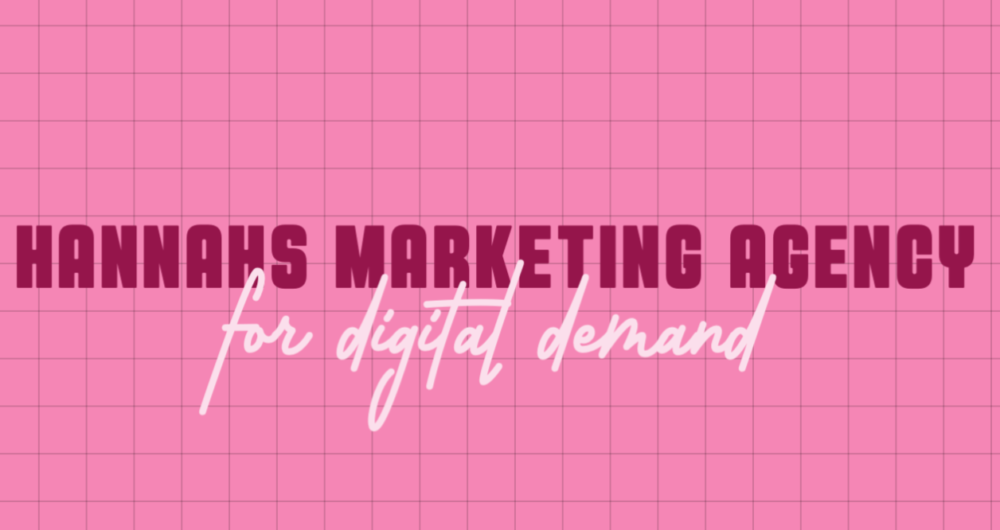

Contact
E-mail Me!
|
Monday |
Tuesday |
Wednesday |
Thursday |
Friday |
Saturday |
Sunday |
| 10:30AM-5PM |
10:30AM-5PM |
10:30AM-5PM |
10:30AM-5PM |
10:30AM-5PM |
CLOSED |
CLOSED |
Hours of Opperation
- Add the gin or vodka, vermouth and olive brine to a shaker filled with ice.
- Shake for 20 seconds until well chilled.
- Double strain through fine mesh strainer into a chilled cocktail glass.
- Garnish with a skewer of olives.
Recipe Inspired by this one!
Have a question?